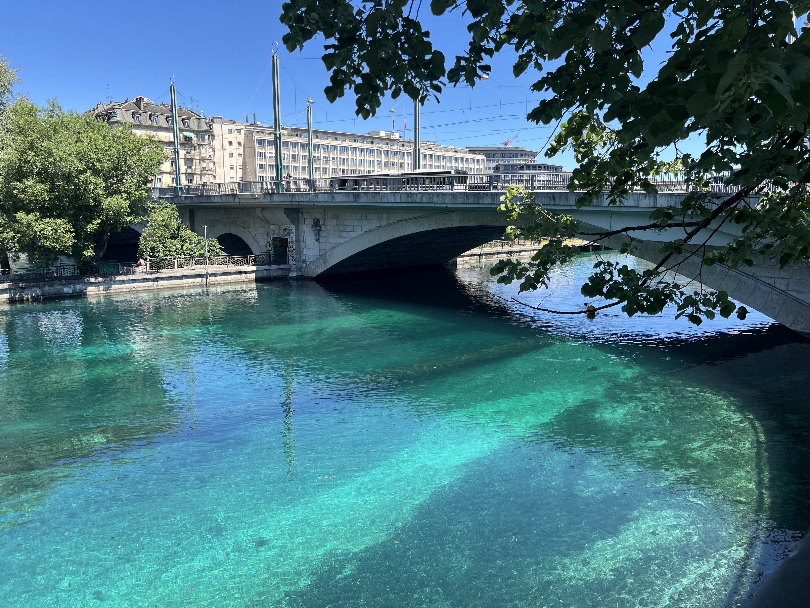

CarougeAll tips →

Wine · Market
Paul-Henri Soler
The best wine in Geneva, maybe the world. CHF 17. Saturday market. Get there before noon.

Seafood · Market
Samouraï des Mers
A Frenchman drives Breton oysters to the Saturday market. Half a dozen and a muscadet.

Market
Marché de Carouge
Saturday 8h–14h. Wine, oysters, vegetables, flowers. Come hungry.
Saint-GervaisAll tips →

Bar · Record Shop
Bongo Joe
Record shop turned outdoor bar on the Rhône. Cold local white, ask for the nuts.

Bar · Swimming · Summer
La Barge
Jump in the Rhône, come back out, drink a shockingly cold beer. Summer only.

Food Hall · Grocery
Manor Food Hall
Best grocery in central Geneva. Fishmonger gets fera from the lake.

Pub
Mulligan's
Geneva's best Guinness. Unpretentious, right by the station.

Restaurant · Lunch
En Faim
Mediterranean lunch spot. Get the sabich.
PlainpalaisAll tips →

Burger · Natural Wine
Papabou
Smashburgers and natural wine. Swiss potato fries.

Japanese · Sushi
Tanuki
Freshest sushi in Geneva. Small, unpretentious, excellent.

Pizza
La Pignata
Good pizza for good prices. Margherita under CHF 15.

Concert Hall
Victoria Hall
One of the most beautiful concert halls in Europe. Walk in and the ceiling will stop you.
PâquisAll tips →

Swimming · Lake · Bar
Bains des Pâquis
70s vibes on Lac Léman. Cold rosé on the jetty, jump off the board, Alps behind you.

Sushi · Restaurant
Nagomi
The best sushi in Geneva. Sit at the bar, order the uni, drink cold sake.
Eaux-VivesAll tips →

Park
Parc La Grange
Probably the most beautiful park in Geneva. Villa, lake, Alps. Bring food.

Shop · Art
Galerie 1 2 3
Vintage Swiss posters. Ski, rail, sport. Browse the website first, go with a specific ask.

Café
Café Chou
Named after the little dough ball they make. Good coffee. Right on the main street.
NationsAll tips →

Sushi · Takeaway
Sagano Take Away
Made in the legit Japanese restaurant next door. Take it to the park.

Boulangerie · Sandwich
Mérigonde
Get the roast beef sandwich. Take it to Parc Vermont. Under CHF 10.

Restaurant
Empanadas Factory
Ask for the sauce picante. Take it to the park.
CornavinAll tips →

Travel · Trains
The ultimate tip for long train rides in Switzerland
Don't book first class. Walk to the restaurant car. White tablecloth, Alps out the window.